Dokumentation der 'xMZ-Plattform' (Development Version)
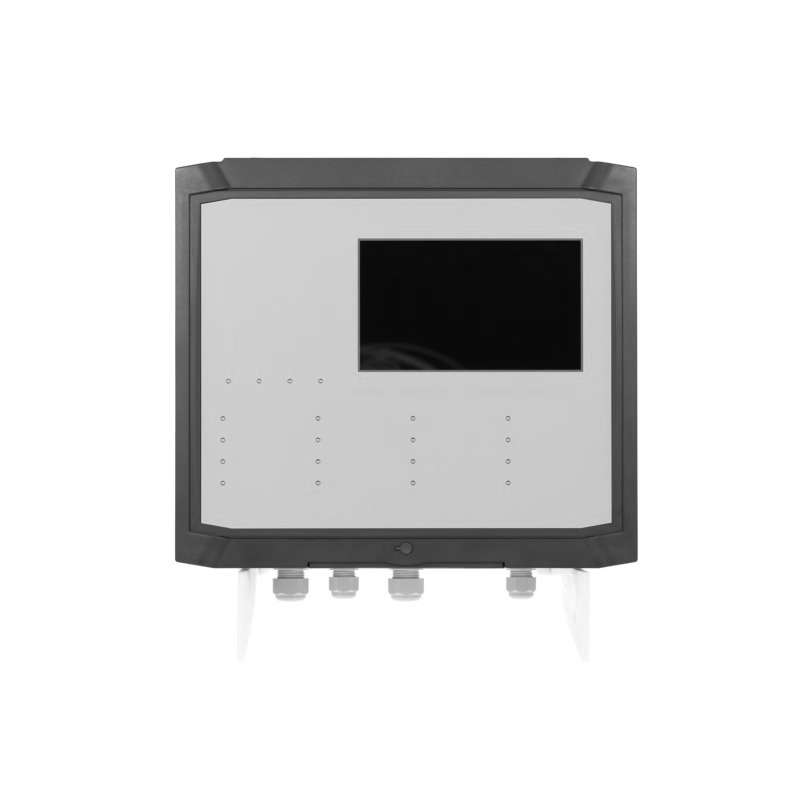
Diese Version beinhaltet alle Informationen die bei der Entwicklung der 'xMZ-Plattform' angefallen sind. Diese Informationen bilden die Grundlage der "Dokumentation der 'xMZ-Plattform'".
Links
- 'xMZ-Plattform'
xmz-serverxmz-gui
Funktionsbeschreibung
Die xMZ-Plattform besteht aus einem Serverteil (xmz-server) und einem oder mehreren so genannten Clients (z.B. xmz-gui).
Ein Client kann zum Beispiel eine Oberfläche (die so genannte GUI) direkt an der Messzentrale sein. Aber auch Sichtplätze oder Zugriffe via Webbrowswer werden als Clientzugriffe bezeichnet.
Funktionsbeschreibung: Server
Der Server startet so früh wie möglich nach dem Start des Betriebssystem.
Beim Start des Servers wird dessen Version ($CARGO_PKG_VERSION) auf STDOUT ausgegeben.
Im Kapitel Verwaltung: Server wird erklärt wie man den Server neu starten, und den Status des Servers prüfen kann.
Bootstrapping, Konfiguration und Laufzeit Informationen
Beim allerersten Start des Servers wird die Server Instanz aus einer initialen Konfigurationsdatein () erstellt. Dieser Vorgang wird auch als Bootstrapping bezeichnet. Siehe "Implementation: Bootstrapping, Konfiguration und Laufzeit Informationen"
Konnte aus dieser ersten Konfiguration eine funktionale Server Intanz gestartet werden, wird eine Datei mit den Laufzeit Informationen (der aktuelle Zustand des Servers) erzeugt.
Alle weiteren Starts des Servers verwenden diese Laufzeit Informationen.
Dies gewährleistet das Daten wie die Laufzeit "persistent" gespeichert werden können (d.h. das diese nicht nach einem Neustart verloren gehen).
Kann keine Instanz erstellt werden ist das ein Critical Fehler!! Der Server startet in diesem Fall nicht!
Datei: Initale Konfiguration, Bootstrapping
/boot/xmz-server.toml
Diese Datein kann über die Umgebungsvariable XMZ_SERVER_CONFIGURATION_PATH geändert werden.
Datei: Laufzeit Informationen
/var/cache/xmz-server/status
Diese Datein kann über die Umgebungsvariable XMZ_SERVER_RUNTIME_INFO_PATH geändert werden.
Konfiguration Server
Wie in der Implementation: Serverkonfiguration beschreiben, werden zur Konfiguration der Serverkomponenten Umbgebungsvariablen verwendet.
Es gibt verschiedene Arten dieser Environment Variablen:
XMZ_SERVER_- diese Variablen steuern Eigenschaften der Server KomponenteROCKET_- diese Variablen steuern Eigenschaften der Rocket Web Komponente
Die Umgebungsvariablen können "von Hand" beim Start der xmz-server Anwendung übergeben werden. In Produktivsystemen werden die Variablen via des systemd Unit Files übergeben.
Click to show
xmz-server.service
# xmz-server.service
#
# systemd Unit für die xMZ-Plattform
#
[Unit]
Description="Server der xMZ-Platform"
After=weston.service
[Service]
Type=simple
Environment=XDG_RUNTIME_DIR=/run/user/0
Environment=XMZ_HARDWARE=0.1.0
Environment=LANG=de_DE.UTF-8
Environment="ROCKET_ENV=prod"
Environment="ROCKET_ADDRESS=127.0.0.1"
Environment="ROCKET_PORT=1337"
Environment="ROCKET_LOG=critical"
ExecStart=/usr/bin/xmz-server
Restart=always
RestartSec=10s
Übersicht Umgebungsvariablen
| Umbgebunsvariable | Funktionsbeschreibung |
|---|---|
| XMZ_SERVER_CONFIGURATION_PATH | Speicherort der initialen Bootstrap Konfigurationsdatei |
| XMZ_SERVER_RUNTIME_INFO_PATH | Speicherort der Laufzeit Informationen |
| ROCKET_ENV | Rocket Umgebung |
| ROCKET_ADDRESS | Adresse über die die Rocket Instanz erreichbar ist |
Fehlerbehandlung
Die Fehler können auf STDERR ausgegeben werden.
Server Tread: json API
Die Serverinstanz startet ein HTTP Server (rocket) mit einer json API die zur Komunikation mit weiteren Komponenten (GUI, Websites) dient.
Server Tread: Persistent Data
In regelmäßigen Abständen speichert der Server die aktuellen Laufzeit Informationen unter: /var/cache/xmz-server/status
Server Tread: Sensoren auslesen
Die Serverinstanz starete ein internen Thread der alle konfigurierten Sensoren abfragt.
Server Tread: Auswertung
In diesem Thread werden folgende Komponenten ausgewertet:
- Zonen
- Laufzeit berechnent und,
- die Spannungsversorgung,
- Ladestand der Accu
Links
Implementation
Default Implementationen
- alle Komponenten des Servers sollten
DefaultImplementationen besizen
verwendete Crates
Unter anderen wurden folgende Crates verwendet.
serde
Serialisation und Deserialisation von Datenstrukturen. Wird von vielen verschiedenen Crates verwendet. https://crates.io/crates/serde
toml
Dateisystemformat der xmz-server Konfiguration.
https://crates.io/crates/toml
bincode
bincode ist ein kompaktes, binäres Datenformat.
Die Laufzeit Informationen des xmz-server werden in diesem Format gespeichert.
https://crates.io/crates/bincode
Links
Server
Implementationsdetails des xmz-server.
Datentypen der Sensoren
Die Sensor Datentypen werden in Vec<Arc<Mutex<Box<Sensor + Send>>>> Containern
gespeichert. Zu dieser Speicherung gibt es warscheinlich keine Alternative.
Versuch die Box<Sensor + Send> in einfachen Vec<T> zu speichern scheitern
schon in der update Funktion des Servers.
Auch der Versuch die Box<Sensor + Send> in Arc<Mutex<Vec<Box<Sensor + Send>>>>
zu speichern scheiterten an dem Versuch diese Struktur thread safe zu machen,
auch hier was schon in der update Funktion des Servers schluss.
https://play.rust-lang.org/?gist=47a87dad21335e4fc96478ad5b44a3e2&version=stable&mode=debug
Implementation: Serverstart
Der Serverstart wird mit einem systemd Unit File realisiert.
https://github.com/zzeroo/meta-xmz-mod-touch/tree/master/recipes-xmz-mod-touch/xmz-server-init
systemd Unit
# xmz-server.service
#
# systemd Unit für die xMZ-Plattform
#
[Unit]
Description="Server der xMZ-Platform"
After=weston.service
[Service]
Type=simple
Environment=XDG_RUNTIME_DIR=/run/user/0
Environment=XMZ_HARDWARE=0.1.0
Environment=LANG=de_DE.UTF-8
Environment="ROCKET_ENV=prod"
Environment="ROCKET_ADDRESS=127.0.0.1"
Environment="ROCKET_PORT=1337"
Environment="ROCKET_LOG=critical"
ExecStart=/usr/bin/xmz-server
Restart=always
RestartSec=10s
Implementation: Bootstrapping, Konfiguration und Laufzeit Informationen
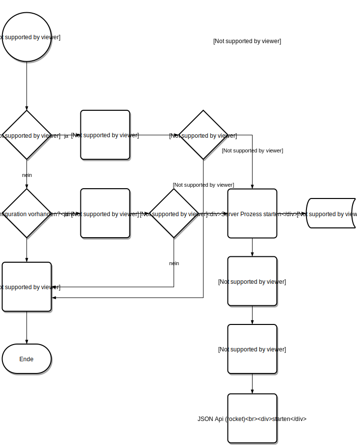
Datenformat Laufzeit Information
Die Laufzeit Informationen werden unter /var/cache/xmz-server/status im
bincode Format gespeichert.
Die initiale Konfiguration /boot/xmz-server.toml wird im toml Datenformat
gespeichert.
Speicherort: Laufzeit Informationen
/var/cache/xmz-server/status
Speicherort: Initale Konfiguration, Bootstrapping
/boot/xmz-server.toml
Links
Implementation: Serverkonfiguration
Die Konfiguration des Servers entspricht den "Vorgaben" einer 12-factor Anwendungen.
Es wird das configure Crate verwendet.
Das Dateiformat der Konfigurationsdatei ist toml.
Links
Sensoren
Die Sensoren sind als Trait definiert.
Funktionen des Traits
- value (Direktwert)
- average (Mittelwert)
- update (Update der Werte)
Die konkreten Sensortypen (Analog 4-20mA, CO/NO2 Modbus Kombisensor) implementieren dann diesen Sensor Trait.
Jedem Messwert ist ein Zeitstempel zugeordnet. Dieser wird bei der Mittelwert- bildung verwendet.
Jede Sensor Instanz speichert die Messwerte der letzten 60 Minuten. Ältere Mess- werte werden verworfen.
Sensortypen
RA-GAS CO Sensor Modbus (CO/NO2 Kombisensor mit Modbus Interface)
RA-GAS NO2 Sensor Modbus (CO/NO2 Kombisensor mit Modbus Interface)
4-20mA Analog Sensor an MR-CI4 (Metz Konnect Modbus Interface)
Simmulation Sensor 15Minuten Mittelwert (15min 0, 15min max) "||||||___"
Simmulation Sensor 30Minuten Mittelwert (30min 0, 30min max) "||||||||||||______"
Sägezahn "/_/_/__"
Tablou "/||_/||__"
Random "|_/|/||||_"
Links
Zonen
Web und JSON API
GET Requests die von der Web/ JSON-API unterstützt werden:
JSON API
Die JSON API ist unter der URL /api/ erreichbar
GET /api/ HTTP/1.1- Index liefert kompletten ServerGET /api/sensors HTTP/1.1- Sensoren Index, liefert alle Sensoren des ServersGET /api/sensor/<id> HTTP/1.1- Liefert den Sensore mit der<id>, oder 404 wenn dieser nicht exisitertGET /api/sensor/<id>/messzellen HTTP/1.1- Messzellen Index, liefert alle Messzellen des SensorsGET /api/sensor/<sensor_id>/messzelle/<id> HTTP/1.1- Liefert die Messzelle mit der<id>oder 404 wenn diese nicht existiert
GUI
Verwaltung
Verwaltung: Server
Über eine serielle Schnittstelle oder eine SSH Verbindung kann der Server
verwaltet werden.
Dazu können die systemd Werkszeuge systemctl und journalctl verwendet werden.
Server Status
systemctl status xmz-server
Server stoppen
systemctl stop xmz-server
Server starten
systemctl start xmz-server
Alternative kann auch der restart Befehl verwendet werden. Hier wird der Server
vorab beendet, wenn er im Moment aktiv ist, und anschließend neu gestartet.
systemctl restart xmz-server
Buildsystem
- via Docker
- https://github.com/zzeroo/easy-build
docker build -t zzeroo/build-yocto ../build-yocto/
mkdir src/easy-build/shared
cd src/easy-build/shared/
docker run -ti --volume=(pwd):/home/build/ zzeroo/build-yocto:latest
Dokumentation
Die Dokumentation wird mit der Software mdBook realisiert.
Es gibt zwei Arten Dokumentation, eine für Endanwender und Kunden, sowie eine Version für Entwickler und Techniker.
Erstellung der Dokumentation
Die Dokumentation wird via Github Pages gehostet.
Branch gh-pages
URL https://$USERNAME.github.io/$REPOSITORY
Gebaut mit TravisCI
Travis ist die Quelle des allseits beliebten Badges wie diese 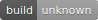
Installation mdBook
Wie auf der mdBook Projektseite beschrieben wird vorab die Software mdBook auf dem lokalen Entwickler PC installiert.
cargo install mdbook
Dateisystemlayout erstellen
Als nächstes wird ein Verzeichis erstellt das den Quellcode des mdBook enthält.
mkdir xmz-doc
Git Repository erstellen
Wie alle Komponenten der [xMZ-Plattform][xmz] wird auch der Quellcode des mdBook in der Versionskontrolle GIT, auf Github gehalten.
Wir erstellen also nun erst einmal ein lokales, leeres Git Repository
cd xmz-doc
git init .
mdBook initalisieren
Nun wird ein leeres mdBook initalisiert. Hierbei werden ein paar grundlegende Dateien angelegt.
Die Frage ob eine .gitignore Datei angelegt werden soll muss mit ja (y) beantwortet werden.
mdbook init .
Git Repo füllen
Das Dateisystemlayout sollte nun in etwa so aussehen:
$ tree
.
├── book
├── book.toml
├── LICENSE
├── README.md
└── src
├── chapter_1.md
└── SUMMARY.md
2 directories, 5 files
Die Dateien README.md und LICENSE habe ich manuell eingefügt, dieser Schritt ist optional.
Mit dem Befehl
git add .
werden nun die Dateien in die Git Versionskontrolle aufgenommen. Das heist Dateien und Ordner die in der .gitignore Datei gelistet sind werden ignoriert.
Anschließend wir mit dem Befehl,
git commit -a -m "Erster Commit, mdBook Grundstruktur"
dieser Stand in die Änderungsliste aufgenommen.
Git Repo auf Github veröffentlichen
Als nächstes legen wir auf Github.com ein Repository an.
Klickt dazu in eurem Profil auf den grünen "New repository" Button ...
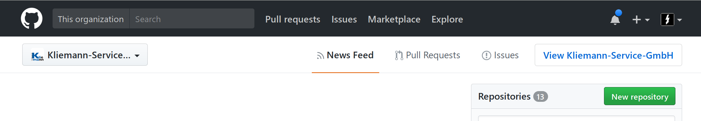
und füllt die entsprechenden Felder aus.
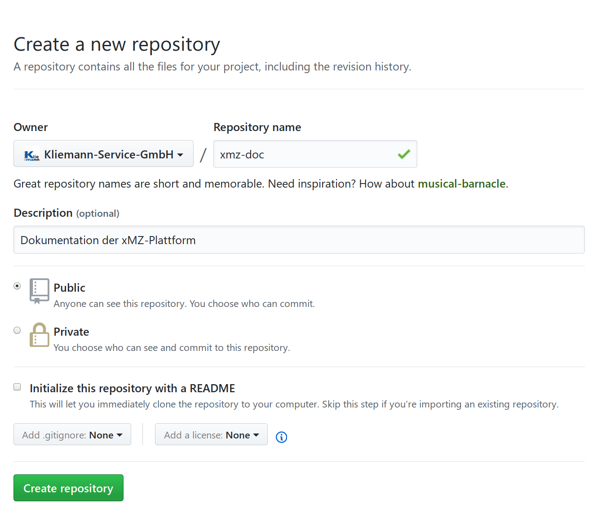
Nachdem auf den grünen Button "Create repository" geklickt wurde kann die Remote Adresse in das lokale Git Repository eingetragen werden.
git remote add origin git@github.com:Kliemann-Service-GmbH/xmz-doc.git
Anschließend wird der master Branch in den remoten Origin Zweig gepusht.
git push -u origin master
Das Repository ist nun unter der URL https://github.com/Kliemann-Service-GmbH/xmz-doc erreichbar.
Repo in Travis aktivieren
Als nächstes müssen wir das Github Repository in Travis aktivieren.
Dazu öffnen wir die URL https://travis-ci.org/ im Browser.
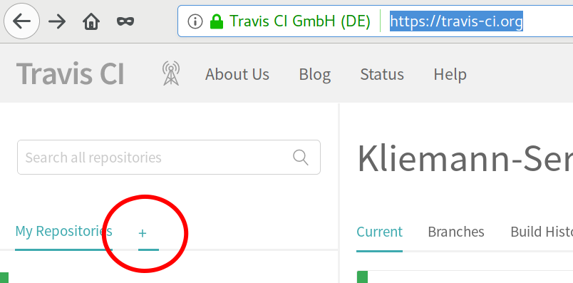
Ein Klick auf das Plus Symbol führt zu einer Übersicht der Github Repositories.
Travis aktualisert die Liste nicht automatisch wenn wir auf Github ein neues Repo erstellt haben müssen wir mit dem Button Sync account die Travis-Repo-Liste aktualisieren.
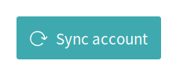
Anschließend wird mti dem kleinen Schalter vor dem Namen des Repos das Repository in Travis aktiviert.
Travis einbinden
Travis benutzt die Datei .travis.yml zur Konfiguration.
Lege nun diese Datei im Root der mdBook Quellen an.
language: rust
branches:
only:
- master
before_install:
- set -e
- rustup self update
install:
- source ~/.cargo/env || true
- true
script:
- true
after_success: |
[ $TRAVIS_BRANCH = master ] &&
[ $TRAVIS_PULL_REQUEST = false ] &&
cargo install --git https://github.com/rust-lang-nursery/mdBook.git &&
mdbook build &&
sudo pip install ghp-import &&
ghp-import -n book &&
git push -fq https://${GH_TOKEN}@github.com/${TRAVIS_REPO_SLUG}.git gh-pages
Travis Berechtigungen
Jetzt muss der Zugriff von Travis auf unser Github Repository aktiviert werden.
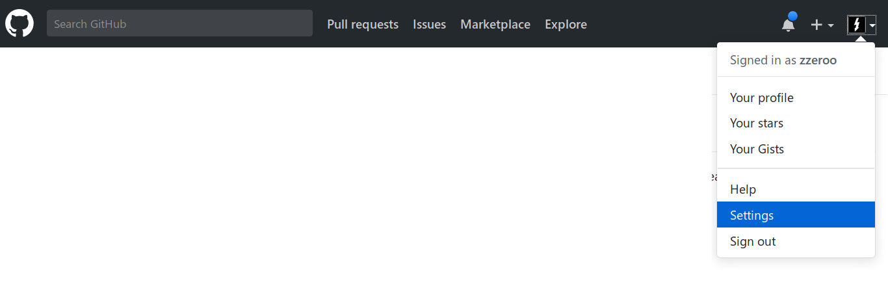
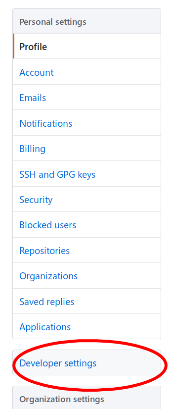
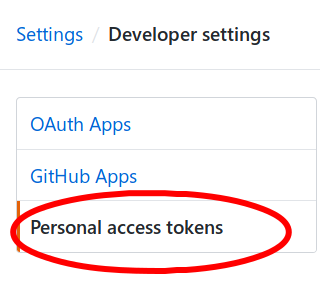
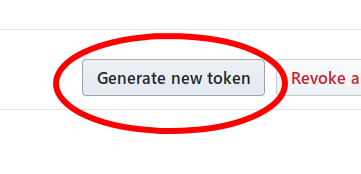
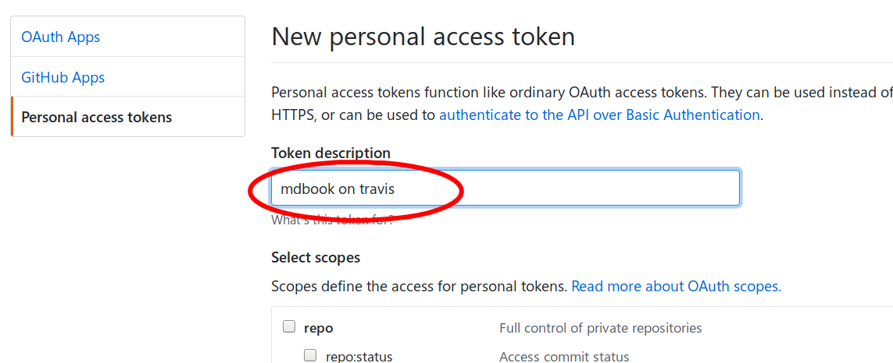
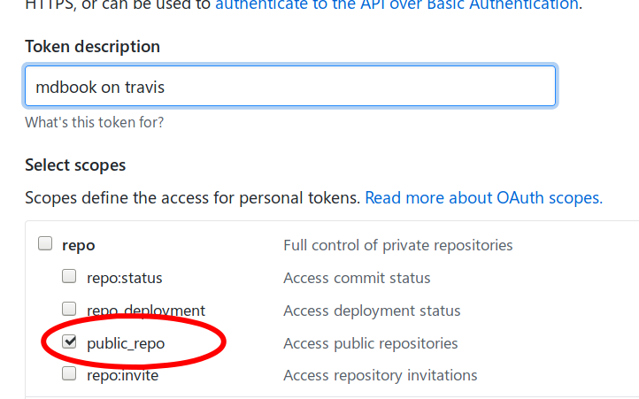
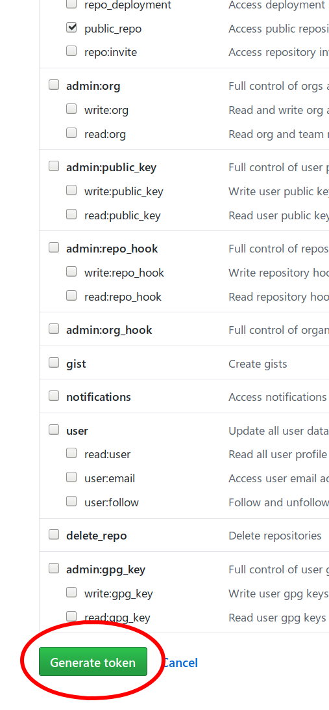
Schließe das Fenster nicht! Der Token ist nur in diesem Moment sichtbar. Im nächsten Befehl musst du $YOUR_TOKEN durch den grün hinterlegten Token ersetzen.
travis encrypt GH_TOKEN=$YOUR_TOKEN --add env.global
Jetzt kann das Fester mit dem Token geschlossen werden. Der letzte Befehl hat die Datei .travis.yml verändert und eine secure: Sektion angefügt.
Die Datei .travis.yml wird nun auch in die Versionskontrolle aufgenommen.
git add .travis.yml
git commit -m "Add Travis"
git push
Travis Results
Nun sollte unter der URL https://$YOUR_GITHUB_USER.github.io/$YOUR_REPO das gerenderte mdBook aufzurufen sein.
Die Github Einstellungen findet man unter //Settings// -> //Github Pages//
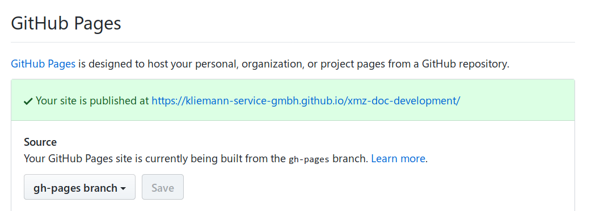
Links
TODO
- Image sichern
$USERAnstelle vonroot- SSH Zugriff ausschließlich via KEY
- SSH Key per Image
- Image: Kernel, Spectre und Meltdown beobachten, unkritisch zur Zeit
- Image: individueller Hostname
- xmz-doc: Anleitung SSH Verbindung herstellen
- xmz-doc: systemctl Befehler server, gui, usw. (Funktionsbeschreibung Server)
Links
- src-xmz
- src-doc-xmz-dev
- src-doc-xmz
- src-xmz-server
- src-xmz-gui
- doc-xmz-server
- doc-xmz-gui
- xmz-mod-touch
{kind=link}
Observer Pattern
/// https://z0ltan.wordpress.com/2017/06/23/the-observer-pattern-in-rust/ extern crate rand; trait Observable<T> { fn register(&mut self, observer: Box<Observer<Item = T>>); } trait Observer { type Item; fn notify(&self, val: &Self::Item); } struct EvenCounter { counter: u32, observers: Vec<Box<Observer<Item = u32>>>, } impl EvenCounter { fn new() -> Self { EvenCounter { counter: 0u32, observers: Vec::new(), } } fn run(&mut self) { loop { use std::thread; use std::time::Duration; thread::sleep(Duration::from_millis(self.get_rand_duration())); self.counter += 1; if self.counter % 2 == 0 { for observer in self.observers.iter() { observer.notify(&self.counter); } } } } fn get_rand_duration(&self) -> u64 { use rand::{Rng, thread_rng}; let mut rng = thread_rng(); rng.gen_range(0, 1000) } } impl Observable<u32> for EvenCounter { fn register(&mut self, observer: Box<Observer<Item = u32>>) { self.observers.push(observer); } } struct EvenObserver { name: String, } impl EvenObserver { fn new(name: String) -> Self { EvenObserver { name } } fn name(&self) -> &str { &self.name } } impl Observer for EvenObserver { type Item = u32; fn notify(&self, val: &Self::Item) { println!("'{}' got: {}", self.name(), val); } } fn main() { let mut foo = EvenCounter::new(); let (bar, baz, quux) = (Box::new(EvenObserver::new("bar".to_string())), Box::new(EvenObserver::new("baz".to_string())), Box::new(EvenObserver::new("quux".to_string()))); foo.register(bar); foo.register(baz); foo.register(quux); foo.run(); }